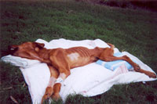

Bailey's Rescue
Bailey is a pure breed Yellow Labrador who was found tied to a chain in a back yard in Florida. His owners, who are being prosecuted, admitted to not feeding the dog for over 30 days!! He weighs only 25 pounds, and had a body temperature of 90 degrees - and this is despite the sweltering Florida heat...
Bailey was moments from death...and doctors are not sure he'll make it. When police found him after getting a call, Bailey could not pick up his head. At first they thought he was dead. Officers quickly rushed him to a nearby emergency hospital. The doctors there realized how far gone Bailey was and chose to euthanize him. One of the vet techs at the animal hospital used to be a volunteer at Save-A-Pet Animal Rescue on Long Island, in NY. After discussing his slim chance of survival, she immediately called the Director, Dori Scofield, and asked her if she would please take on Bailey's case even though it was grim. Without hesitation, Dori agreed and gave a credit card number to pay for all medical expenses for Bailey.
Helping animals in need is what Save-A-Pet is all about. Our love for animals has no state line. But our funds are low and we have spent over $3,000 for Bailey's medical needs. His long term future includes being monitored, getting heartworm treatment, and last but not least, getting neutered.
Please help us continue helping Bailey. Donations can be sent to Save-A-Pet at 608 Route 112, Port Jefferson Station, NY 11776. You can also donate securely online via PayPal.
October 23, 2005
Bailey had his first of three blood transfusions. His postassium level was so low, they feared cardiac arrest. All his vital organs had already started to shut down. But Bailey pulled through like a trooper through day 1.
October 24, 2005
Day 2- his blood pressure crashed and he was quickly put on dopamine, he also had his second blood transfusion. His prognosis is still critical, but he seems to know that all these people surrounding him, are there to help him. His eyes speak louder than his faint bark. Bailey is able to hold down food, but can only eat tiny amounts, even though he wants to devour every last bite. He seems to love women, even though his abuser was a woman. But, so is his rescuer. His spirit is stronger than his body right now.
October 28, 2005
Bailey had his third and hopefully last transfusion. He can now lift his head and bark. While all along keeping his tail at a constant wag as a friend walks near him or past his kennel. He goes outside for walks on a blanket inside a radio flyer wagon. He loves the sunshine on his face and greets passerby's with his soulful eyes and ever wagging tail. He even gave a commanding bark at a man with a hot dog, as if to say "Want to share that with me buddy?". No hot dogs for Bailey yet, he's on a strict diet of small meals several times daily. He is eating cat food at the moment because his taurine levels were dangerously low, and his liver has not fully kicked back into gear. This sweet and soulful companion, tragically betrayed by heartless criminals, the same people to whom Bailey devoted himself, still has hope in his heart. He looks at the doctors with wistful eyes. They tell him to hang on...and each day he makes a little more progress.
October 30, 2005
Bailey is improving, but his protein levels and taurine levels cause him to have another plasma transfusion. He is such a trooper. He is eating 2 cases of canned(the small cans) of cat food per day to raise his taurine levels and get his liver functioning properly. He is alert and barking. He's a fighter who knows he has a big fan club pulling for him.
October 31, 2005
This year it will be a much Happier Halloween for Bailey. He's getting lots of treats and no more tricks! He is coming home from the hospital tomorrow!! He is going to be fostered by Nina, the wonderful vet tech who first called me to help him. She will monitor him closely. He will go back and forth to the University of Florida for continued follow up care. He has become a true case study for this teaching hospital. Everyone is in love with him, and things are looking optimistic for Bailey. But don't stop praying yet!
Updates will also be posted to baileyrescue.com.